Open to Research Internship opportunities in:
Machine Learning • Deep Learning • (3D) Computer Vision • Geometric ML • 3D Shape Analysis • Neural Rendering • NLP • Multimodal AI
Nemanja Vujadinović
Novi Sad, Serbia | +381641250987 |
vujadinovic01@gmail.com
Hello! I'm a Master’s student in the MVA program at ENS Paris-Saclay, currently based in France.
I completed my Bachelor’s degree in Software Engineering at the University of Novi Sad, Serbia.
I also have 2 years of experience working in Machine Learning for (3D) Computer Vision.
My main interests lie in 3D Computer Vision, geometric deep learning and 3D shape analysis, and
neural rendering techniques (NeRFs). I am also interested in Natural Language Processing, especially
where it intersects with other scientific fields-e.g., multimodal learning and vision–language models.
I’m passionate about research-driven development and enjoy working at the intersection of advanced
mathematics, ML theory, and practical applications.
Experience
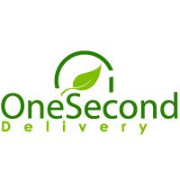
Machine learning engineer
OneSecondDelivery Inc
- Adapted, analyzed, and used SOTA depth estimation and semantic segmentation models to generate high-quality pseudo-labels for training.
- Designed an input-output foundation pipeline that combines RGB images with ~100+ channels of segmentation logits, depth maps, and synthetic stereo data.
- Built a self-supervised pre-training framework using a ResNet-based student–teacher setup for drone path planning and obstacle avoidance in autonomous food delivery.
- Improved model performance by replacing ResNet with a customized (for Hailo) ConvNeXt architecture.
- Generated large-scale synthetic stereo datasets by combining central RGB frames with depth maps to simulate left–right drone camera views.
- Used multiple depth estimation models (Apple metric model, Depth Anything v2) and custom fusion strategies to stabilize depth scaling for improved stereo simulation.
- Collected and evaluated real stereo footage using calibrated drone cameras to benchmark and refine synthetic data quality, ensuring geometric alignment with real-world measurements.
- Evaluated and adapted LaMa, DeepFill v2, and diffusion-based models for inpainting occluded regions caused by pixel displacements.
- Designed, trained, and iteratively refined several CycleGAN-based inpainting architectures from scratch, achieving more realistic and consistent results on synthetic data than previously used SOTA models.
- Set up and maintained an MLOps infrastructure on Google Cloud for model experimentation and data preprocessing using VertexAI and Compute Engine.
- Designed and managed concurrent runs of depth and segmentation models for large-scale label generation, reducing processing time by ~35%.
- Performed small-scale training and evaluation experiments to validate system stability and optimize model throughput.
Nov 2024 – Oct 2025
Machine learning intern/engineer
Wonder Dynamics
- Analyzed, processed, and annotated image and video data to create high-quality datasets for depth estimation.
- Utilized COLMAP to generate ground truth depth values for images that were missing them.
- Researched methods for extending single-frame depth estimation models to temporal models while maintaining low inference time.
- Experimented with using optical flow to estimate and refine depth.
- Focused on running and testing different models and adjusting the code to find the best balance between speed and accuracy.
- Built a temporally consistent FOV estimation model from scratch, achieving improved performance over previously used models. Independently led this project for ~80% of its duration.
- Created a comprehensive dataset using 360-degree videos, extracting 5–10 images per frame with varied FOV, roll, pitch, and yaw parameters.
- Developed and executed training scripts, experimenting with different backbones and regression heads to optimize model accuracy.
- Conducted evaluations on test images from both in-distribution and out-of-distribution datasets to ensure generalizability for production use.
- Improved initial models by iteratively refining datasets and addressing issues such as blur dependency, leading to successful deployment in production.
- Explored a new temporal FOV approach using two models together, focusing on temporal consistency and designing an appropriate loss function.
- Engaged in camera trajectory analysis, developing a trajectory comparison tool using Python and Blender to enhance motion understanding.
Sep 2023 – July 2024
Education
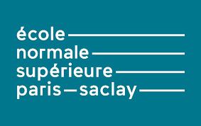
École Normale Supérieure Paris-Saclay
M2 Master’s Degree
MVA (Mathematics, Vision & Learning)
- Courseworks: 3D Computer vision, Geometry Processing and Geometric Deep Learning, Geometric Data Analysis, Probabilistic Graphical Models and Deep Generative Models, Deep Learning, Advanced learning for text and graph data, Convex optimization
- Other: Currently pursuing the #2 globally ranked Master’s in Mathematics (Shanghai Rankings). The program is highly research-oriented, with every course requiring deep understanding of the underlying mathematical theory and the ability to critically analyze, reproduce, or advance state-of-the-art research papers across machine learning, computer vision, and applied mathematics. It strengthens my research-driven mindset and prepares me for industry roles in applied research and advanced ML/CV development.
Sep 2025 – Present
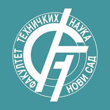
Faculty of Tehnical Sciences, University in Novi Sad, Serbia
Master of Science - MS
Software Engineering - Intelligent systems
- Courseworks: Neural networks, Sentiment analysis, Data analysis, Data compression, Sentiment Web, DevOps
Oct 2024 - present
Faculty of Tehnical Sciences, University in Novi Sad, Serbia
Bachelor of Science - BS
Software Engineering
GPA: 10.0/10.0
- Courseworks: Software Engineering, Web programming (Spring, .NET, Flask), Mobile development (Android), Cloud computing (AWS), App development (Java, C#, Python), Software Testing (JUnit, TestNG, Selenium), Databases (SQL & NoSQL), Data structures & algorithms, Internet security, Internet of Things, Computer graphics, Parallel programing, Machine learning, Deep learning, Statistics
- Other: I had the opportunity to work on over 30 projects, mainly team based, across various areas of Software engineering. In many of those, I have excelled as a team leader. These projects helped me grow my tehnical skills and taught me how to collaborate within diverse teams, especially when deadlines are approaching. All of this has prepared me well for the team-focues environment in the software industry.
Sep 2020 - July 2024
Conferences & summer schools
Practical Seminar in Machine Learning
Microsoft, Tenstorrent, Everseen
- Courseworks: Machine learning, Deep learning, Object detection & Object tracking, NLP & Transformers, Advanced transformers, Mamba architecture, Stable diffusion, Reinforcement learning, NERFs, Multi-modal vision
July 2024 - Aug 2024
Eastern European Machine Learning Summer School
Google Deepmind
- Courseworks: Deep learning, GenAI, Reinforcement learning, Bayesian DL, Transformers, VLMs, Geometric deep learning
July 2024
Courses & certificates
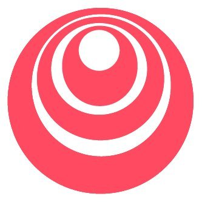
Generative AI with Large Language Models
DeepLearning.AI
- Courseworks: GenAI, LLMs, Reinforcement learning
Ongoing
Natural language processing specialization
DeepLearning.AI
- Courseworks: Vector space models, Probabilistic models, Sequence models, Attention models, Transformers
Ongoing
Apply Generative Adversarial Networks (GANs)
DeepLearning.AI
- Courseworks: Data augmentation & privacy, Image-to-Image translation, Pix2Pix, CycleGANs
February 2024
Build Basic Generative Adversarial Networks (GANs)
DeepLearning.AI
- Courseworks: GANs fundamentals, VAEs, WGANs, DCGANs, Adversarial loss
January 2024
Deep learning specialization
DeepLearning.AI
- Courseworks: Neural networks, Regularization & hyperparameter tuning, CNNs, RNNs, LSTM, NLP, Attention, Transformers, TensorFlow
January 2024
Skills
Software engineering
Programming
- Python, Java, C#, C++
Web & Mobile Technologies
- HTML, CSS, JavaScript, TypeScript (Angular), RESTful API development, Java SpringBoot, Java AndroidStudio, C# .NET
Database & Cloud
- SQL, NoSQL, MongoDB, PostgreSQL, InfluxDB, AWS
Others
- Design patterns, OOPs concepts, App development, Software testing, Internet of Things, Computer graphics (OpenGL)
AI & Machine learning
Tools & software
- PyTorch, TensorFlow, R, Numpy, OpenCV, Scikit-learn
Technical skills
- Machine learning algorithms, Deep learning, Computer vision, NLP, Statistics
Architectures
- SQL, NoSQL, MongoDB, PostgreSQL, InfluxDB, AWS
Projects
AI & Machine learning

Visual question answering
Tech stack: Python, Jupyter Notebook
Description: Developed a discriminative Visual Question Answering model that achieved 51% accuracy on the VQA v2 dataset. I analyzed and preprocessed the dataset to match images with questions and top answers. For visual embeddings, I utilized DINOv2, while BERT was used for text embeddings. Additionally, I designed and trained a classification network from scratch. This project was done during the PSIML summer school.
Aug 2024
Accomodo
Tech stack: Java SpringBoot, Angular, Drools, GoogleMaps
Description: I developed a rule-based travel accommodation recommendation system similar to Booking.com. This project offers personalized accommodation suggestions based on users’ histories and preferences, making it easier for them to find the perfect place to stay. System supports user levels that reward booking history with various discounts. To keep the platform safe and welcoming, the system identifies and flags irresponsible or malicious users. Additionally, the system sends notifications to users, keeping them updated on discounts, new listings in their preferred areas and the status of their bookings. Forward chaining and CEP were used for personalized suggestions, while the backward chaining was used for finding accomodations based on the entered location.
Apr 2024 - June 2024
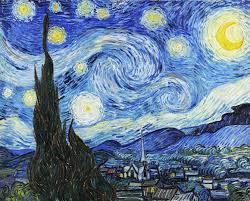
Image style transfer
Tech stack: Python, Jupyter Notebook, Gradio
Description: Researched and compared image style transfer techniques using CycleGAN and Neural Style Transfer (NST). I have implemented a CycleGAN model from scratch and utilized transfer learning on VGG-19 for NST. The study focused on generating stylized images from portrait and landscape inputs, transforming them into Cubism and Ukiyo-e styles, respectively. The project also contains a Gradio UI app for image comparison, allowing users to visualize the differences in generated results. The evaluation of stylized images was performed through qualitative analysis and generation time comparisons. Results showed that NST added more artistic abstraction, while CycleGAN preserved realism and generated images up to 25 times faster than NST.
January 2024
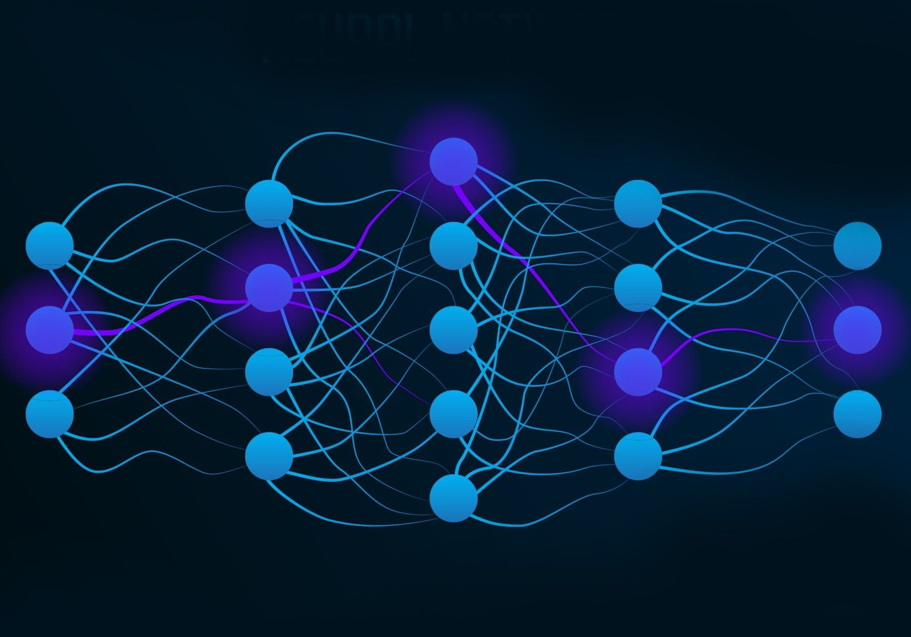
Age classification
Tech stack: Python, Jupyter Notebook
Description: Developed machine learning project for classifying people portraits by their age using CNN. Alongside the binary classification, model also provides a probability score for being young. Model was trained on CelebA dataset and achieved a testing accuracy of 85.12%.
June 2023
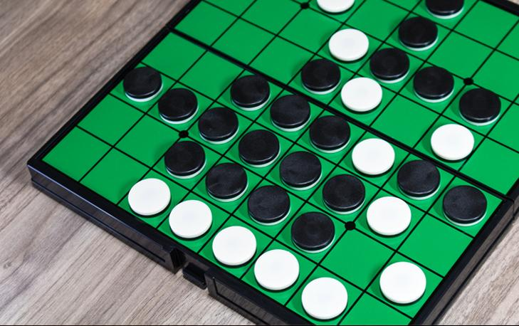
Reversi/Othello
Tech stack: Python
Description: Developed a Reversi/Othello game as a project for the Algorithms and Data Structures course. Project is focused focused on tree and map data structures and implementation the Minimax algorithm with alpha-beta pruning for AI. The game is a console application where players place disks on an 8×8 board, with human playing black and AI playing white. The board's state is optimized using binary numbers and bitwise operations for faster disk placement, score calculation and heuristic evaluation. Heuristics have been made by going over some details and tactics in Reversi game mainly by using internet.
March 2021
Web, mobile & app development
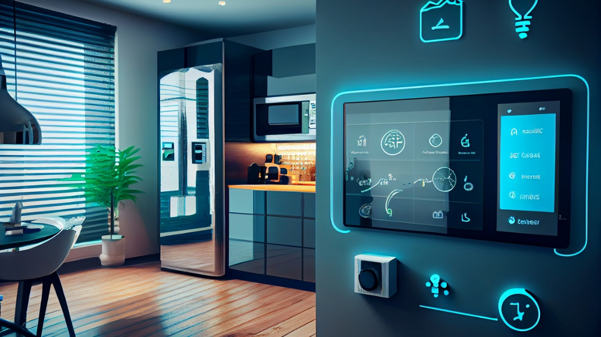
La Casa de Smart
Tech stack: C# .NET, Angular, Python, Flask, InfluxDB, MQTT, Telegraf, NGINX, Locust
Description: Developed a cloud-based software solution for monitoring smart homes within smart cities. The platform allows users to control and monitor smart devices in real-time, including sensors for temperature, humidity, and electricity consumption, as well as devices with manual or automated commands. These smart devices were simulated using Python scripts, with their generated data stored in InfluxDB. Communication between devices and the system was facilitated through the MQTT protocol and Telegraf. NGINX was used as a reverse proxy and for serving frontend and image data. To ensure scalability, performance and load tests were conducted using Locust, simulating multiple simultaneous users and a large number of devices.
Dec 2023 - June 2024
Smart home
Tech stack: Python, Flask, Angular, InfluxDB, MQTT, Grafana
Description: Developed a web application for real-time monitoring of both simulated and physical devices connected to a Raspberry Pi, including a buzzer, button, membrane switch, LED diode, DHT sensor, PIR sensor, LCD display, and DUS sensor. Communication between devices was established via MQTT, with data stored in InfluxDB and visualized through Grafana. We implemented an alarm system that activates based on sensor input (e.g., PIR and DUS sensors), which monitors motion and determines entry or exit, triggering the alarm under specific conditions. Alarm events are logged and visualized, and users are notified via the web application. The system also includes features such as a PIN-based alarm deactivation, environmental monitoring (temperature and humidity), and control of RGB lights and a buzzer alarm via both the web interface and remote sensors.
Dec 2023 - Jan 2024
Cloud drive system
Tech stack: AWS, Angular, Python
Description: Developed a Google Drive-inspired web application for organizing and storing image, video, .txt and PDF files using AWS cloud services. Users can upload, download, and delete content, create photo albums and share files with others. The project utilizes AWS S3 for data storage, DynamoDB for file organization, Cognito for user authentication and API gateway for requests handling. The system is designed to ensure data consistency and employs IaC for service configuration.
Apr 2023 - June 2023
Tech stack: Java SpringBoot, Java AndroidStudio, Angular, Python, Selenium, TestNG
Description: Developed Uber-like full stack application for taxi services. Backend was implemented in Spring Boot supporting CRUD operations, web sockets and scheduled methods, following the MVC pattern. Created the frontend in Angular and a mobile frontend for Android using Java AndroidStudio. Implemented real-time notifications for ride status changes and features like ride scheduling, multi-destination support, and driver/passenger ratings. Additionally, project included a real-time simulation in Python of cars driving and picking up passengers on Google Maps, using the Google Maps API for location tracking. System supported live support/chat between passengers, drivers and admins. Whole system was covered with unit testing using TestNG and system testing with Selenium.
Nov 2022 - Feb 2023
Security
Mini zanzibar
Tech stack: Java SpringBoot, Flask, Angular
Description: Developed a simplified version of Google's Zanzibar system, providing a flexible configuration language for access control policies, evaluating access control lists (ACLs) and ensuring consistent, scalable and low-latency authorization decisions. Google's LevelDB was used for storing ACLs, while ConsulDB was used for managing namespace configurations. The system was analyzed following the OWASP Standard. Furthermore, we have established a threat model and performed static code analysis on our software.
June 2024
Certificate manager
Tech stack: Java SpringBoot, Angular
Description: Developed web application for the creation and manipulation of X509 certificates, operating within the HTTPS protocol. System supports security features such as two-factor authentication (2FA), ReCAPTCHA, and OAuth for enhanced user authentication. Additionally, system provides password recovery and rotation through SMS and Email services. Special emphasis was placed on protecting sensitive data and preventing common security vulnerabilities like XSS, injection and path traversal attacks.
Apr 2023 - June 2023
Computer graphics
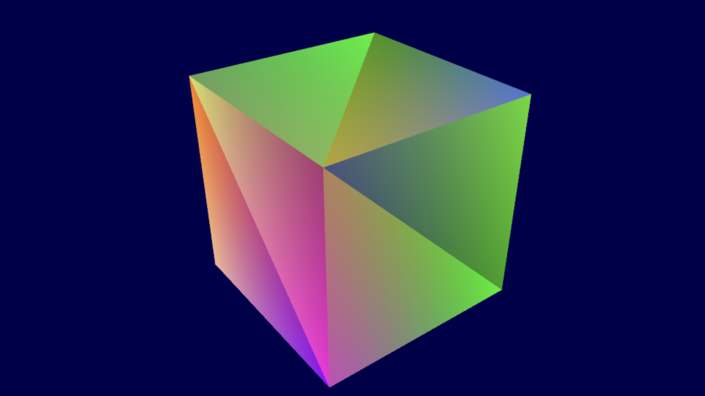
3D Louvre exhibition
Tech stack: C++, OpenGL, GLFW
Description: I developed a 3D application that simulates a room in the Louvre, extending my previous 2D project. Paintings, which are placed on only one wall, are visible only with UV lamp. I implemented a UV lamp that follows the camera’s position and orientation, emitting a purple light to enhance the atmosphere. For navigation, I created a first-person perspective camera set at a human-like height, enabling movement in all directions while preventing it from passing through walls. The camera can rotate vertically and horizontally, utilizing a perspective projection to ensure full scene visibility and incorporating zoom functionality. I also implemented depth testing and back face culling for better rendering efficiency. Additionally, I integrated both Gouraud and Phong shading, allowing users to toggle between the two shading techniques. I added a point light switch on the floor that activates a yellow light to illuminate the entire room, which operates only when the camera is in close proximity. A white spotlight on the ceiling, directed at the wall with moving images, is always active and is represented by a lamp mesh model. The walls, ceiling and floor are implemented as diffuse and specular maps.
Jan 2024
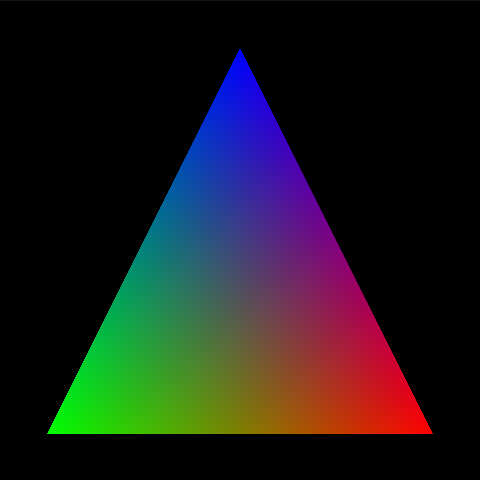
2D Louvre exhibition
Tech stack: C++, OpenGL, GLFW
Description: Developed 2D visual representation of a wall in the Louvre with four paintings framed on it. Wall also contains button and progress bar. Each frame moves along its unique circular path. Simulating a button click changes the wall's color and resets the positions of the frames. By increasing or decreasing the progress bar's fill, the frames can move faster or slower.
Dec 2023
2D Curling
Tech stack: Python, PyQT5, Pygame
Description: Developed a 2D simulation of a curling game. Main focus of this project was the simulation of physics-based interactions between stones themselves and the court. The project employs numerical methods such as the Euler method for motion and the RK4N method for solving Newton’s second law. Collision detection uses distance comparisons and a sweep-and-prune algorithm to optimize performance. Users can customize game parameters such as stone mass and friction coefficient which directly influence the behavior and motion of the stones during the simulation.
Jan 2022 - Feb 2022
Other
High performance computing on 2D convolutions
Tech stack: Python, Rust
Description: The project is centered around a simplified 2D convolutional operation, where the convolutional block consists of a convolutional layer, an activation function and concludes with a max pooling layer. The main focus of this project was the implementation of both sequential and parallel versions of the convolution operation in Python and Rust, along with a comparative analysis of their performance. Solutions were evaluated and compared through weak and strong scaling experiments in both languages, using Amdahl's and Gustafson's laws. The visualization of results was implemented using Plotters library in Rust. The animation of convolutional operation was implemented using matrix-dispay library in Rust.
June 2024 - July 2024
SCADA
Tech stack: C# .NET
Description: Developed a general SCADA management system for a university course, incorporating four key components: RTU client (C# console app), SCADA core (multi-threaded ASP.NET backend), Angular frontend, and SQLite database. The frontend enables real-time monitoring, database management and report generation. Real-time tag updates and alarm notifications are sent via web-socket connections, while CRUD operations are performed on input and output tags. The project simulates core SCADA management principles, including tag monitoring, scan times, and alarm notifications.
July 2023
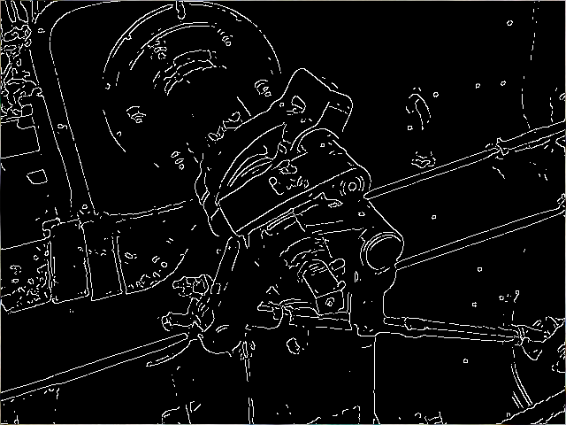
Edge detection
Tech stack: C++
Description: Implemented edge detection algorithms using the Prewitt operator in serial and parallel versions with the help of the TBB (Threading Building Blocks) library. The program reads an image in a raw bitmap format, applies the selected edge detection algorithm, and outputs the results as filtered images. The project's efficiency is evaluated by measuring execution time across different scenarios, showcasing the benefits of parallel processing in image processing tasks.
June 2022
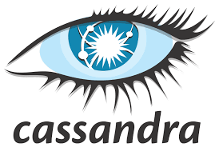
Key-value storage
Tech stack: GoLang
Description: Developed a NoSQL key-value engine for big data inspired by the principles of Cassandra's NoSQL database architecture. Idea of this project was to implement algorithms and data structures in Golang and create console application for CRUD operations on pairs of key-value. For data manipulation, we applied a diverse set of algorithms including LRU cache, LSM tree, Memtable, Merkle tree, Write-ahead log and others.
Jan 2022 - Feb 2022
Awards
- Bourse de Gouvernement Français (BGF Scholarship), 2025-2026.
- Huawei Technologies Belgrade Scholarship, 2024-2025.
- National scholarship for exceptional students, 2017-2025.
- 2nd place award on Physics Serbian national competition, 2017, 2019, 2020.
- 3rd place award on Physics Serbian national competition, 2016, 2018.
Download My Resume